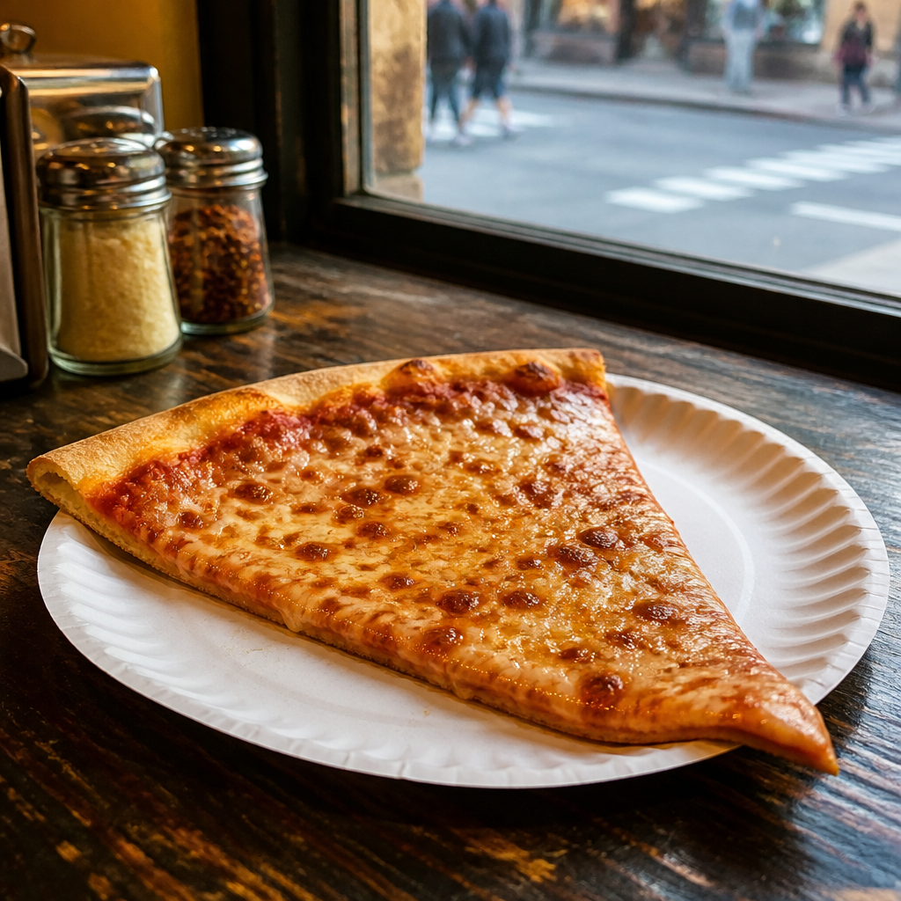
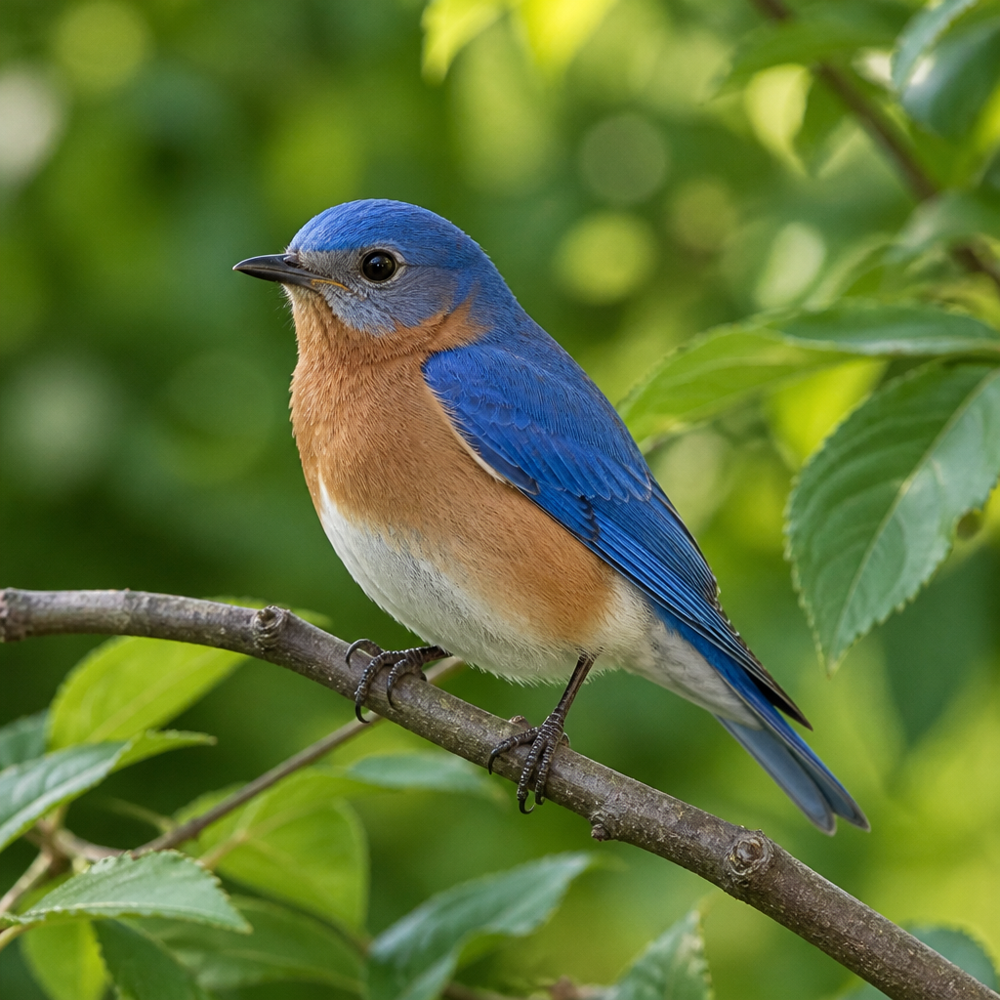

FIVE BOROUGHS. ONE BIG FEELING.
New York
city guide
A pocket-sized introduction to the place that never quite sits still.
Start with a slice, stay for the small things.
Find your first stop ↓
NEW YORK
MADE OF
MOMENTS
40° 42′ 46″ N
74° 00′ 21″ W
01 / 04
MANHATTANTHE BRONXQUEENSBROOKLYNSTATEN ISLAND
01 THE FIRST BITE
A city served
by the slice.
Around here, a meal can be folded in half and eaten on the move.

THE NEW YORK SLICE
ON THE COUNTER
Hot, fast,
and folded.
New York-style pizza is all about a wide, hand-tossed crust: thin
enough to fold, sturdy enough to carry, and best eaten straight
from the paper plate. A little char around the edge is part of the
story.
ORDER IT
By the slice, please.
one more?
02 THE QUICK READ
A few things
to know.
Big city, useful context. Keep these in your back pocket.
-
01
NICKNAME
The Big Apple
-
02
POPULATION
8,804,190 people
-
03
STATEHOOD
1788
5BOROUGHS
ONE CITY
AT CITY HALL01 / PEOPLE
ZM
THE CITY’S MAYOR
Zohran
Mamdani
Mayor of New York City
A city is its people—and the people who show up for them.
03 A WILD LITTLE DETAIL
Look up.
Look closer.
The Eastern bluebird is New York State’s bird. Tap or focus the
picture and press Enter or Space to give it a little shake.
STATE BIRD Eastern bluebird

SIALIA SIALIS · NEW YORK STATE BIRD
04 YOUR SIDE OF THE STORY
Things I like.
Make this guide yours. Add a place, a moment, or a good idea for later.
-
+
Your list is waiting for its first entry.
05 A FRIENDLY LOCAL, ON CALL
Ask a local.
Wondering what to eat, where to wander, or what makes this city
tick? Ask away. Your guide keeps it kind, short, and New York.
Answers are guided by the city facts above.
NYC FIELD GUIDE
CITY GUIDE ONLINE
YOUR LOCAL GUIDE
Hey there. Ask me about a New York bite, a city fact, or a good way to explore.